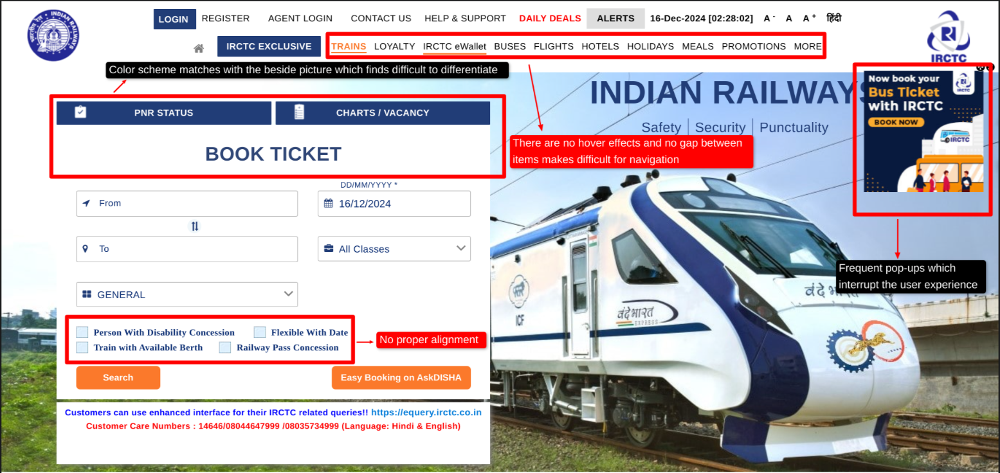

Back to Home Page
Annotations and Suggestions for IRCTC Train Search Page
Issues Identified
-
Cluttered Interface: The page has an overwhelming
amount of information displayed without clear grouping or
prioritization.
-
Example: The multiple fields for input like "From," "To," and
"Journey Date" are not well-spaced, causing confusion for new users.
-
Design Consistency: The color scheme and fonts lack
modern aesthetics, making the interface appear outdated.
-
Example: The mix of different shades of blue and white does not
follow a cohesive design principle.
-
Navigation Issues: Key actions, such as logging in and
accessing frequently used features, are not prominently visible or
user-friendly.
-
Lack of Responsiveness: The layout does not adapt
seamlessly to smaller screens, making it difficult to use on mobile
devices.
-
Pop-ups and Redirects: Frequent pop-ups for promotional
content interrupt the user experience.



Websites for Inspiration
-
MakeMyTrip (https://www.makemytrip.com):
-
Offers a clean, modern design with intuitive search functionality
for travel options.
-
Responsive and user-friendly layout ensures a seamless experience
across devices.
-
Google Flights (https://www.google.com/flights):
-
Simple and minimalistic interface with powerful filtering options.
- Focuses on speed and clarity by showing results dynamically.
-
Cleartrip (https://www.cleartrip.com):
-
Uses a clean grid layout with intuitive navigation and effective use
of white space.
-
Provides a consistent experience across desktop and mobile
platforms.
Recommended changes
- Enhance the IRCTC page with a modern, responsive design.
- Get rid of pop-ups and ads which might ruin User Experience.
-
Adopt a more consistent color scheme and typography for better visual
appeal.
-
Make cards more creatively and make it responsive as well as clear.
- Give proper alignment and spacing.
-
Implement dynamic loading for faster and smoother user interactions.